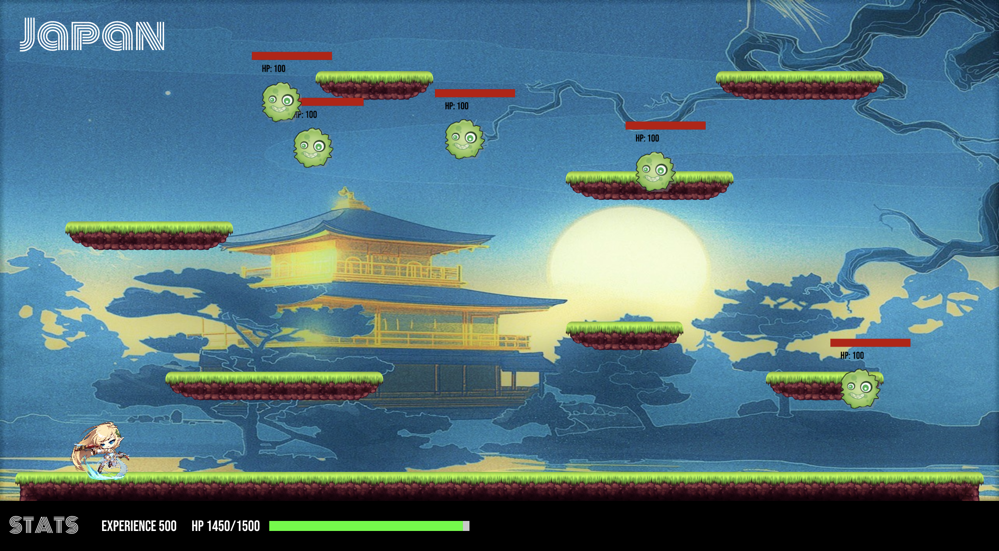
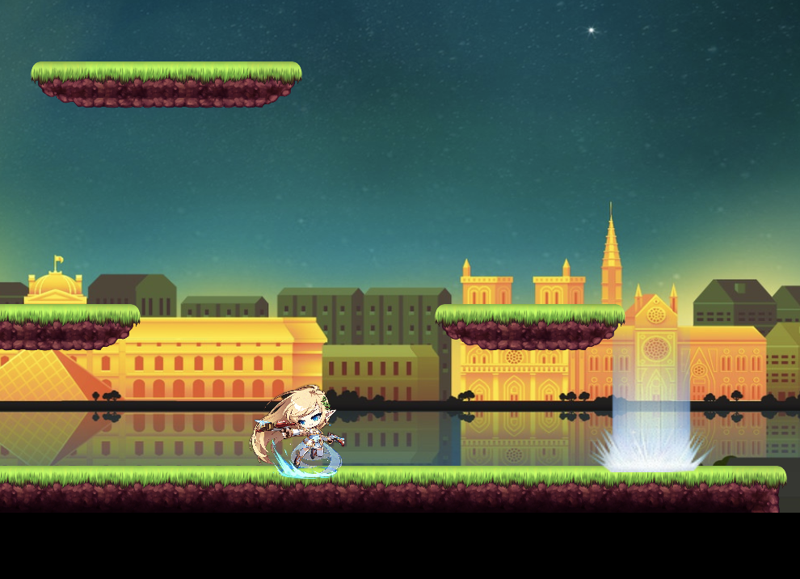
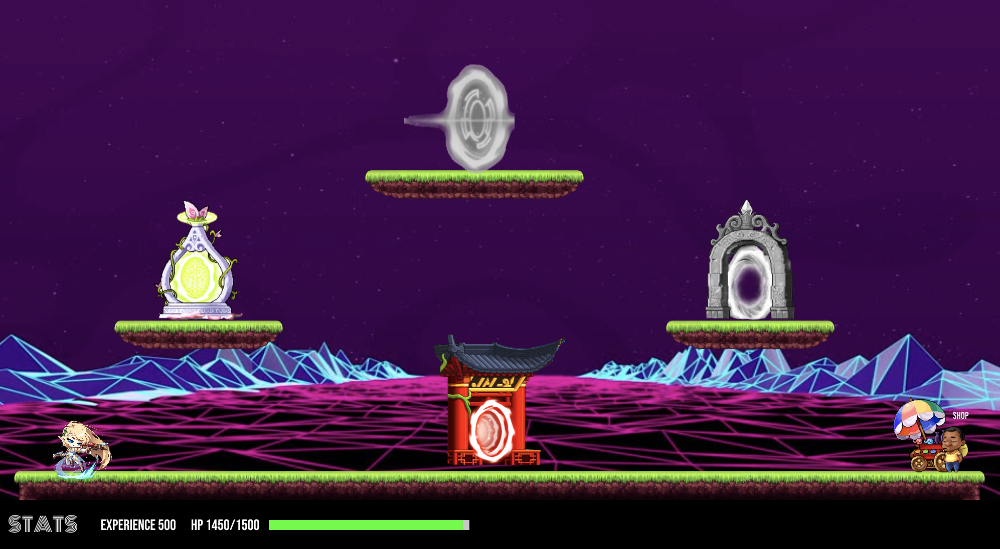
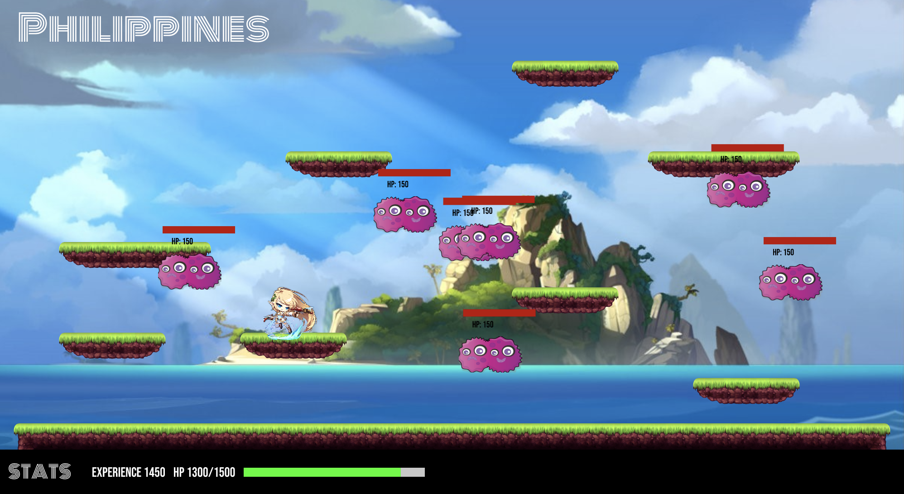
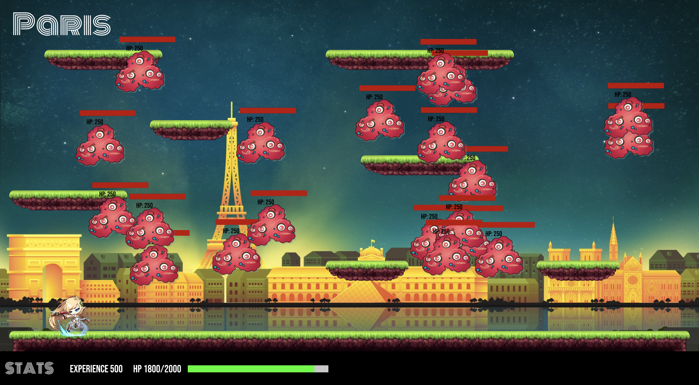
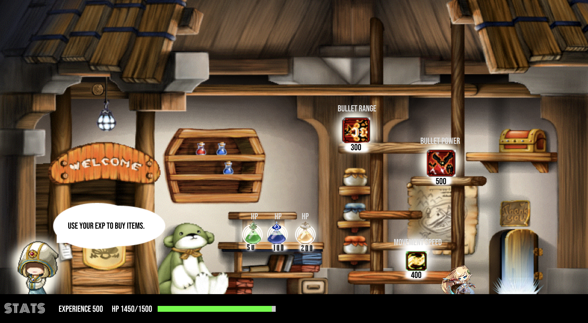

CovidStory — Claire Wang & Kelly Wang
For our midterm project, we decided to recreate MapleStory, a 2D roleplaying game. Players in a virtual world can kill monsters, collect rewards, and purchase items in a shop. However, for our game, instead of having the player kill monsters, we had them kill covid particles. Each level is a different part of the world, and when all four levels are cleared, Covid-19 is eradicated.
We started by implementing the basic gameplay on a single level. As a tile-based 2D game, we used a tilemap and a two-dimensional array to store and draw the formations of each level. This also made collision detection easier, because instead of looping through each platform every time the player moved, we could simply find which tile of the game the player was moving to, and check to see what kind of tile was in the 2D array at that location. If there is a platform tile, the player gets stopped, but if not, the player can continue to move.
Each covid particle stores its own health points and has a location that is randomly generated. They move on the X-axis based on Perlin Noise, but don't move vertically. If the player comes into contact with a covid particle, they will lose health points. To kill the covid particles, the player can shoot bullets from a magic gun using the ‘X' key. Once a covid particle's health points reach 0, they die, and the player gains experience points. Once all the covid particles have been killed, a portal opens up on the right side of the page, which the user can use to go back to the map. If the player's health points drop below 0, then they lose the game.
 The map features multiple portals to different worlds and a shop. Each portal gets unlocked as soon as the previous level is completed. Once you have finished a level, you can go back to play again to gain more experience points.
As the levels progress, the covid particles get stronger. They have more health points and cause more damage to the player. However, the player also gets stronger upon level completion. The player gains more health points and their bullets do more damage.
 To further strengthen themselves, the player can visit the shop. We decided to allow users to use the mouse in the shop just to simplify the user experience. Each item in the shop costs a different amount of experience points. Some will restore the player's health, some will upgrade the player's weapons or speed.

For the player's upgrades, we realized that a player could become really overpowered by using them multiple times. For example, for our bullet power power-up the bullet power is increased by 20%. After a few purchases the bullet power could be increased by as much as 2x. So we decided to increase the price of power-ups each time they are purchased to prevent this type of situation.
For the future, we would like to be able to add more levels, more items to the shop that can be used during levels, and even player customizations.